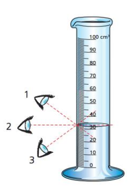
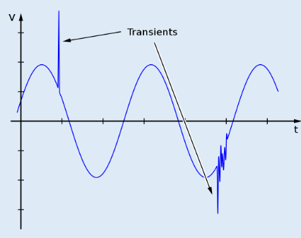
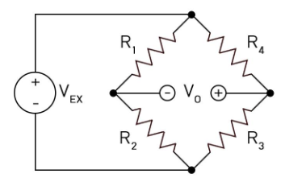
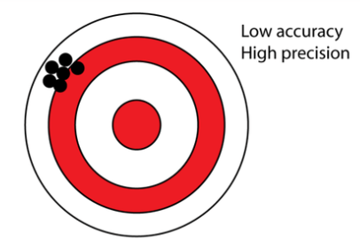
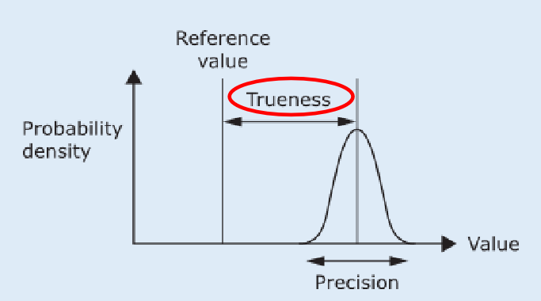

Mechanical Measurements & Instrumentation
اللَّهُمَّ لا سَهْلَ إِلاَّ ما جَعَلْتَهُ سَهْلاً، وأنْتَ تَجْعَلُ الحَزْنَ إِذَا شِئْتَ سَهْلاً.
رَبِّ اشْرَحْ لِي صَدْرِي * وَيَسِّرْ لِي أَمْرِي * وَاحْلُلْ عُقْدَةً مِنْ لِسَانِي * يَفْقَهُوا قَوْلِي.
اللَّهُمَّ انْفَعْنِي بِمَا عَلَّمْتَنِي، وَعَلِّمْنِي مَا يَنْفَعُنِي، وَزِدْنِي عِلْمًا.
اللهم إني أسألك فهم النبيين، وحفظ المرسلين والملائكة المقربين، اللهم اجعل ألسنتنا عامرة بذكرك، وقلوبنا بخشيتك، وأسرارنا بطاعتك، إنك على كل شيء قدير.
يا حي يا قيوم برحمتك أستغيث، أصلح لي شأني كله ولا تكلني إلى نفسي طرفة عين.
اللهم يا جامع الناس ليوم لا ريب فيه، اجمع علي ضالتي.
اللهم إني استودعتك ما قرأت وما حفظت وما تعلمت، فرده عند حاجتي إليه، إنك على كل شيء قدير، وحسبنا الله ونعم الوكيل.
أستغفر الله، أستغفر الله، أستغفر الله.
أي Measurement بنعمله مش بيطلع رقمًا مؤكدًا 100%. لأن فيه دايمًا margin of doubt، فلازم نسأل: المارجن ده كبير قد إيه؟ وعشان كده محتاجين رقمين لتحديد الـ Uncertainty: عرض الـ interval، والـ Confidence Level (قد إيه إحنا متأكدين إن الـ true value جوه المارجن ده).
| Error Type | Affects | الفكرة |
|---|---|---|
| Random Errors | Precision | مرة موجب ومرة سالب، بدون اتجاه ثابت. |
| Systematic (Bias) Errors | Accuracy | انحراف ثابت الاتجاه سببه مشكلة في الـ system. |
| Human Errors | — | أخطاء الشخص نفسه (Mistakes)، مش بتتعالج بالـ averaging. |
Sources of Random Error:
| Cause | الشرح |
|---|---|
| Parallax Error | الماسورة المدرجة (0–100 cm³) وفيها ثلاث عيون؛ العين رقم 2 أفقية مع سطح السائل (القراءة الصحيحة)، والعينان 1 و3 بتقرأوا قيمة أعلى أو أقل. زاوية النظر بتتغير كل مرة، فالخطأ بيبقى عشوائي.  |
| Atmospheric pressure, temperature | تغيرات عشوائية في الظروف المحيطة بتخلي القراءة أعلى أو أقل قليلًا. |
| Vibration while measuring | اهتزاز الجهاز أو الـ setup بيأثر على القراءة (صورة: شخص بيقيس بمتر شريط). |
| Definition of the measurand | الـ measurand هو الكمية المراد قياسها؛ لو مش محددة بدقة (موضع أو طريقة القياس) هتختلف القياسات. |
| Loose electric connections | التوصيل المفكوك بيعمل transients في الإشارة: الرسم بيوضح V vs t موجة جيبية عليها spike حاد ثم اضطراب (Transients).  |
| Excitation voltage of a Wheatstone bridge | الدائرة فيها R1–R4 وجهد التغذية VEX والخرج V0؛ أي تغير عشوائي في VEX بيظهر في الخرج.  |
| Noise from electric fields | Noise / interference بيخلي الإشارة تتغير قليلًا من قراءة لأخرى. |
تخيل إن الجهاز المفروض يقرأ 50 لو مفيش random error. عينة القراءات: 47 – 49 – 50 – 51 – 53. الزيادات والنقصانات بتميل إنها تلغي بعضها عند أخذ الـ average، وكل ما زاد عدد القياسات قل تأثير الـ random error على المتوسط.
الرسم: Probability density مقابل Value. ارتفاع المنحنى عند قيمة = تكرار القياسات حولها. العرض (Precision) بيوضح تباعد القراءات.
Accuracy = قرب القراءات من الـ true value. Precision = قرب القراءات من بعضها. شكل التوزيع يقول لك الـ precision، ومكانه بالنسبة للـ true value يقول لك الـ accuracy. صورة الهدف: نقاط متجمعة جدًا بعيد عن المركز = Low accuracy, High precision (وده بيحصل بسبب Systematic Error / Bias).

| الحالة | القراءات |
|---|---|
| High Accuracy + High Precision | قريبة من بعضها ومن الـ true value. |
| High Precision + Low Accuracy | قريبة من بعضها لكن بعيدة عن الـ true value. |
| Low Precision + High Accuracy | منتشرة لكن مركزها قريب من الـ true value. |
| Low Precision + Low Accuracy | منتشرة ومركزها بعيد. |

Examples: Non Linearity · Hysteresis · Sensitivity · Drift · Zero Error · Use an instrument which is improperly calibrated. وأشهرها Drift, Hysteresis, Zero Error.
| Figure (data sheet) | ما يوضحه الرسم |
|---|---|
| (a) Hysteresis error | منحنيان upscale وdownscale بين Input value وOutput value حتى FSO؛ الفرق عند نفس الـ input بين Ydown وYup هو الـ hysteresis. |
| (b) Linearity error | الفرق بين YL (Best linear curve fit) وY (Actual data trend). |
| (c) Sensitivity error | خطوط Ymax وYnom (Nominal curve) والحد الأدنى للجهاز النموذجي؛ ميل الخط K بيختلف. |
| (d) Zero shift (null) error | الخط الاسمي (Nominal) ينزاح لأعلى أو لأسفل (Typical shift high/low) بشكل موازٍ، فتظهر قراءة عند الصفر. |
إزاي نحدد/نقلل الـ Systematic Error:
a) Instrument Uncertainty (UI)
b) Zero-Order Uncertainty (Uo) — بتنتج من الـ Resolution: أصغر تغير يقدر الجهاز يميزه/يعرضه (مثال الـ pressure gauge: 0–100 psi). دي limitation في الجهاز مش غلطة المستخدم.
مثال على شاشة Digital بتعرض 1, 2, 3…: Resolution = 1 فـ Uo = 0.5.
Systematic Uncertainty (Us) — Design Stage Uncertainty
الـ uncertainties بتتجمع بطريقة Root Sum Square (تربيع ← جمع ← جذر) وليس جمعًا عاديًا.
أخطاء من الشخص نفسه، المفروض يتأكد منها ويصححها — مش random بنتعامل معاه بالـ averaging:
| Random | Systematic | |
|---|---|---|
| Affects | Precision | Accuracy |
| Reduced by | More experimental trials | Calibration, manufacturer data, reference instrument, different instrument/procedure |
| Uncertainty | Ur (statistics) | Us = √(Uo² + UI²) |